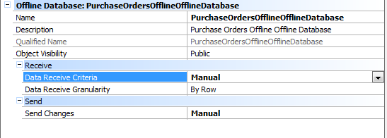
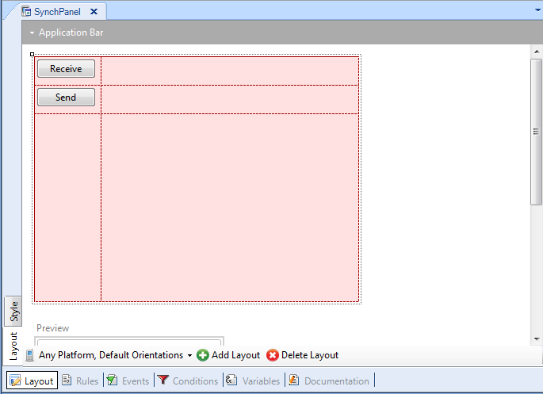

The Synchronization API is a very useful tool that makes synchronization between the Device and the Server extremely easy. The Genexus developer does not have to worry about how to apply changes on the server, or how to receive data changes from the server and apply them on the device. Is very important to note that the Synchronization API can be called at any time, even if the developer has set any value for the Data Receive Criteria property or Send Changes property, both methods Receive and Send are still going to work. In this document it is explained how to create a simple offline application calling manually the synchronization programs using the Synchronization API in order to synchronize the device with the server. How it worksLet’s take the "Simple Version Manual" version of the Sales sample as example . In this application's version it is needed to synchronize the application whenever the user wants to. In order to do that the first step is to configure the Offline Database Object properties. As in this application example is necessary to manage manually the synchronization, it is needed to set the Data Receive Criteria property and the Send Changes property to "Manual" as shown in the following image:  The second step is to create a new SDPanel, in this example it is called “SynchPanel”, and add 2 buttons in the layout like shown in the image bellow:  Finally each button is going to have an event where the Synchronization API is called:
Event 'Receive'
Synchronization.Receive()
Endevent
Event 'Send'
Synchronization.Send()
Endevent
Doing just that, it is possible to synchronize data whenever the user wants to. When tapping the "Receive" button, data from server is going to be synchronized into the device, and when tapping the Send button, all local changes are submitted to the server in order to apply changes. LimitationsThe Synchronization.Send method sends data to the server in a single request, that may be a problem if connectivity is very unstable and the amount of data to send is big. In that case, consider executing it when a stable connection is available or Coding your Data Synchronization programs. See also
|